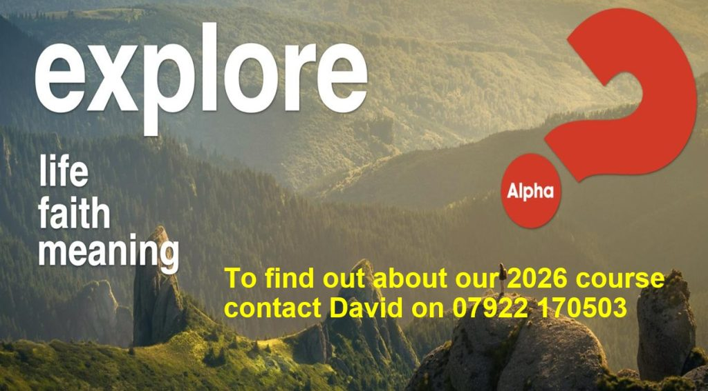

Our week, together
Church happens all week long. From coffee and toddlers to youth nights and prayer, here's the rhythm of life at TBC — drop in to whatever takes your interest. Everyone's welcome.
Sunday
Worship for all agesMorning Worship
Modern, informal, all-age worship — come as you are. JAM for primary children (up to Year 5) and 6Up for Year 6–9 head out to their own groups partway through, and there's a crèche for little ones. Livestreamed on YouTube.
Tuesday
Community & friendship–12:00
Coffee Morning
Our open café — proper coffee, homemade cake and a friendly welcome. No agenda, just company. Absolutely everyone welcome.
–15:00
Fellas Games Afternoon
"A youth group for men" — cards, board games, banter and a brew. A relaxed afternoon of good company.
Wednesday
Exploring & growingAlpha Course
A relaxed, no-pressure space to explore the big questions of life and faith over food and conversation. Bring your doubts. Runs as a course over several weeks — see below for the next start date.
House Group
A midweek small group meeting to read the Bible, chat honestly and pray for one another.
International Bible Study
A warm, welcoming study especially for friends who've come to Thatcham from other countries — reading the Bible together across languages and cultures.
Thursday
Families & neighbours–11:30
TBC Toddlers
A warm, busy morning for under-fives and their grown-ups — play, songs, craft and snacks (and coffee for the adults!).
–15:00
West Berkshire Foodbank
Our weekly distribution point, offering practical help and a listening ear. Donations welcome in the foyer all week.
Thu
Vintage Adventure
A gentle, dementia-friendly gathering with music, memories and refreshments — carers and companions welcome too. Held at the Methodist Church, not at TBC.
Friday
Youth–21:30
Nexus Youth Night
Our secondary-age youth group — games, tuck, hangout space and honest conversation about faith and life. Bring a mate.
Saturday
Breakfast & prayerMen's Breakfast
A proper cooked breakfast, good chat and an encouraging thought to start the day.
–09:30
Prayer Breakfast
Gather over breakfast to pray together for our church family, our town and the world. All welcome.
–11:30
Flourish Women's Breakfast
A morning for women to gather, eat, encourage one another and grow in faith and friendship. Pauses over July and August.
Stay curious. Try Alpha.
Alpha is a relaxed series of evenings exploring the meaning of life, faith and everything in between. No question is too simple or too hostile — and there's always food.
- Next course starts Wednesday 16 SeptemberRuns on Wednesday evenings.
- 7:15pm coffee, finish by 9pmRelaxed, friendly and never rushed.
- No cost, no catch, no pressureCome once to try it, or stay for the whole course.
To sign up or ask a question: David Taylor — 07922 170503

Life is better in a smaller circle
Alongside Sundays, most of us belong to a small group — around 6 to 10 people meeting in homes, at church or online through the week.
It's where faith gets personal: reading the Bible together, sharing real life, praying for one another, and helping equip one another to be active disciples of Jesus. It's also simply where friendships grow.
Ask about joining a groupNot sure where to start?
Coffee Morning on a Tuesday or a Sunday service are the easiest ways in. We'll look out for you.